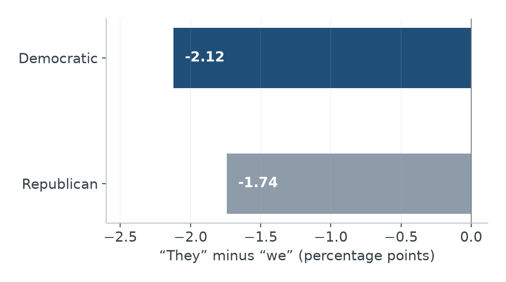
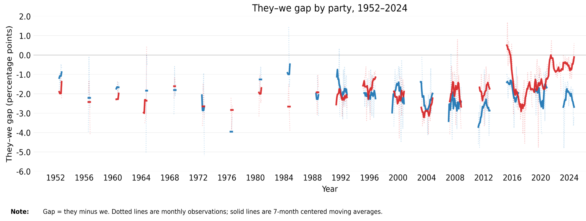
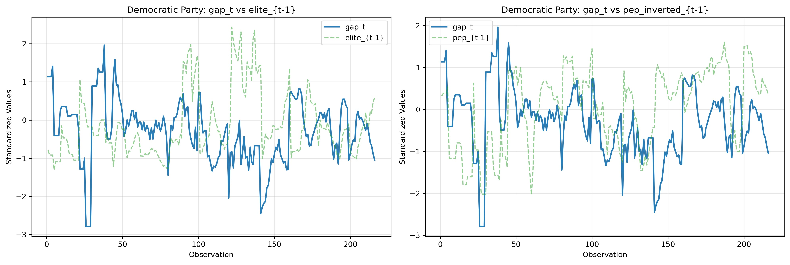
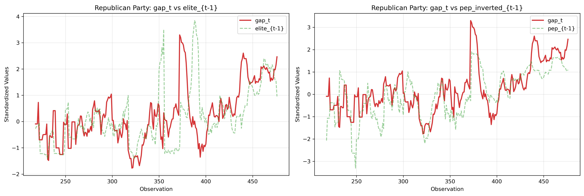
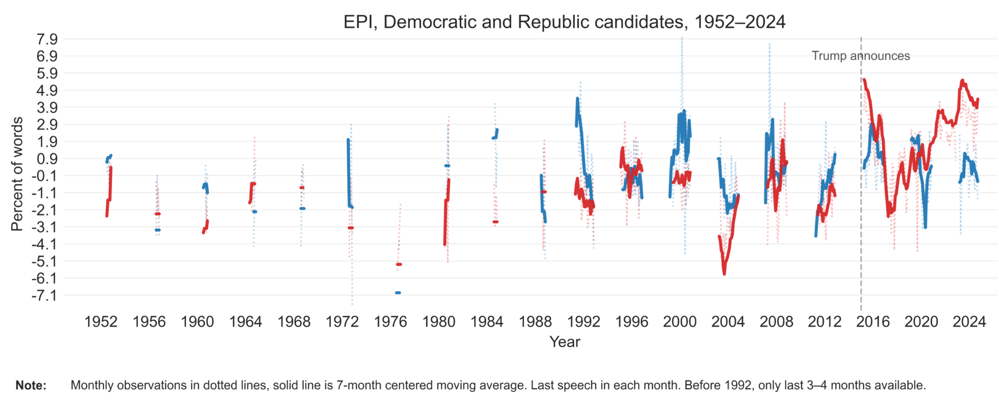
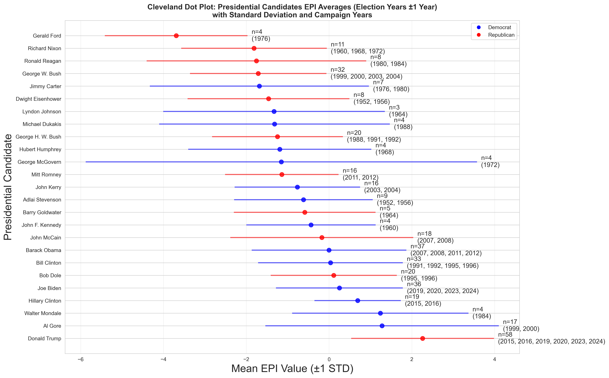

Exclusionary Populism in the U.S.
Party Patterns and Trump's Rhetoric
Political language defines who belongs and who stands outside a collective. This study examines pronouns and references to elites and “the people” in U.S. presidential campaign speeches, placing Trump-era rhetoric within a longer comparison of party patterns.
The boundaries expressed by “we” and “they”
Populist rhetoric can invoke a unified people while identifying an antagonistic elite or an excluded other. Pronouns offer one observable trace of these boundaries. This analysis asks how party differences in pronoun balance relate to elite and people-centered language, and how those patterns change across campaign periods.
The central distinction is between constructing an inclusive political community and defining that community through opposition. References to “the people” and attacks on elites may both appear in populist speech, yet they need not have the same relationship to pronoun choice. Separating them allows the analysis to ask which lexical combinations accompany a more outward-directed rhetorical balance.
In Mudde’s (2007) account, populism constructs a moral opposition between “the people” and “the elite.” Exclusionary variants additionally draw boundaries around who belongs inside the political community. This distinction motivates examining both elite–people references and pronoun balance: naming an adversary and invoking a collective are related rhetorical acts, but one cannot stand in for the other.
Campaign messages help organize voter interpretations and issue emphasis (Vavreck, 2009; Zaller, 1992), while Sides et al. (2018) place identity conflict at the center of their account of the 2016 election. These perspectives make the boundary between “we” and “they” a substantive question about mobilization. The present analysis examines its linguistic traces over time, without measuring how an audience receives the message.
Campaign language across seven decades
The corpus combines U.S. presidential campaign language from the Savin–Treisman replication collection for Donald Trump’s Words, deposited by Daniel Treisman at Harvard Dataverse, with earlier speeches from the Annenberg/Pew archive of presidential campaign discourse. These collections make it possible to place recent rhetoric in a longer historical comparison. This analysis covers Democratic and Republican candidates during 1952–2024 and contains 475 observations. The unit of analysis is the party–month.
Dictionary categories measure “they,” “we,” elite references, and appeals to “the people.” The pronoun gap subtracts the percentage of “we” words from the percentage of “they” words. Negative values indicate more frequent “we” words; a higher gap indicates a relative shift toward “they.” The gap is a percentage-point difference, not a ratio or a direct measure of political intent.
Word shares make differently sized speeches comparable without treating a longer transcript as automatically more exclusionary. They also narrow the question: the measure describes the frequency of a category, not the identity of its target. In particular, “they” can refer to allies or opponents, and “we” need not include the whole public. The categories are indicators whose interpretation depends on context.
The lexical approach connects to research on long-run changes in political language (Jordan et al., 2019) and to Savin and Treisman’s (2024, 2025) analysis and replication resources for Trump’s words. Repeated category definitions make historical comparisons possible, while the distinction between a lexical indicator and its contextual meaning remains central.
A party difference with substantial historical variation

View full-size figure
{kind=link}
Both parties use more “we” than “they” on average. The Republican mean is less negative, and a positive party coefficient remains after adjustment for a time trend. The historical plot also shows variation within each party that a single average conceals.

View full-size figure
{kind=link}
The party comparison is relative. A less negative Republican gap does not mean that Republican candidates generally use more “they” than “we”; both party averages show the opposite. Reading the means alongside the historical series also prevents a stable average difference from being mistaken for an invariant feature of every candidate or campaign.
Elite and people-centered language are not interchangeable
Lagged regressions relate earlier lexical patterns to the subsequent pronoun gap. In a pooled model, elite language has a positive association and people-centered language a negative one. Allowing the slopes to vary by party reveals a more positive elite-language association among Republicans; people-centered appeals remain negatively related to the gap in both parties.

View full-size figure
{kind=link}

View full-size figure
{kind=link}
Candidate changes, campaign events, and the composition of observed speeches can influence both lexical categories. Temporal ordering alone does not identify a rhetorical mechanism.
Standardization in the two party plots makes fluctuations in differently scaled series easier to compare. The regression then asks whether earlier elite and people-centered language helps describe the subsequent gap. Party interactions allow those relationships to differ instead of imposing a single common slope. The pooled positive elite association should consequently not be assumed to characterize both parties in the same way.
A sharper recent shift relative to the Republican baseline
Prior scholarship describes Trump’s communication in terms of grandiosity and informality (Ahmadian et al., 2017) and disruption, demonization, and challenges to rhetorical norms (Jamieson & Taussig, 2017). This motivates treating him as an informative case within a longer party history. It does not require assuming that exclusionary language began with his candidacy.
The Exclusionary Populism Index adds standardized “they” and “elite” frequencies and subtracts standardized “we” and “people” frequencies. Each component is standardized within party. The Republican series rises markedly in the Trump-era observations relative to its own earlier baseline, while the Democratic trajectory is less sustained.

View full-size figure
{kind=link}
The composite broadens the pronoun comparison by including the elite–people dimension. An increase can arise from more “they” or elite language, less “we” or people-centered language, or a combination of those changes. The recent Republican rise concerns movement relative to that party’s own historical distribution.
From party trajectories to individual candidates
Candidate averages bring the party-level trajectory back to individual speakers. Because the EPI components are standardized within party, candidate scores represent departures from separate party-specific historical baselines. The plot asks which candidates stand out relative to their own party’s distribution; its common display does not place absolute underlying word frequencies on a shared cross-party scale.

View full-size figure
{kind=link}
Trump appears as a particularly large departure within the Republican distribution. Together with the party trajectory, this supports interpreting his rhetoric as an amplification of a broader Republican pattern. It does not establish that he created that trajectory or that a higher EPI than a Democratic candidate means objectively more exclusionary language in absolute terms.
Lexical boundaries need contextual interpretation
The results connect a persistent difference in pronoun balance with a larger recent shift in the Republican composite index. They describe measurable features of campaign rhetoric, without establishing that every use of “they” expresses exclusion or that a candidate caused the historical change.
Close reading and contextual annotation remain essential: pronouns can refer to many actors, and elite criticism can serve different political purposes. Broader speech coverage and alternative dictionaries would help assess how consistently these indicators capture exclusionary appeals.
The historical perspective also changes the candidate-level question. Trump’s rhetoric can be examined as part of a broader party trajectory, rather than treating every recent contrast as a wholly new personal style. The evidence supports locating his speeches within that trajectory; establishing how an individual candidate, campaign event, or audience shaped it would require a different research design.
References
Ahmadian, S., Azarshahi, S., & Paulhus, D. L. (2017). Explaining Donald Trump via communication style. Personality and Individual Differences, 107, 49–53. https://doi.org/10.1016/j.paid.2016.11.018
Jamieson, K. H., & Taussig, D. (2017). Disruption, demonization, deliverance and norm destruction. Political Science Quarterly, 132(4), 619–650. https://doi.org/10.1002/polq.12699
Jordan, K. N., Sterling, J., Pennebaker, J. W., & Boyd, R. L. (2019). Examining long-term trends in politics and culture through language of political leaders and cultural institutions. Proceedings of the National Academy of Sciences, 116(9), 3476–3481. https://doi.org/10.1073/pnas.1811987116
Mudde, C. (2007). Populist radical right parties in Europe. Cambridge University Press.
Savin, N., & Treisman, D. (2024). Donald Trump's words (Working Paper No. 32665). National Bureau of Economic Research. https://doi.org/10.3386/w32665
Savin, N., & Treisman, D. (2025). Donald Trump’s words replication materials. UCLA and NBER. https://doi.org/10.7910/DVN/NAAER7
Sides, J., Tesler, M., & Vavreck, L. (2018). Identity crisis: The 2016 presidential campaign and the battle for the meaning of America. Princeton University Press.
Vavreck, L. (2009). The message matters: The economy and presidential campaigns. Princeton University Press.
Zaller, J. (1992). The nature and origins of mass opinion. Cambridge University Press.